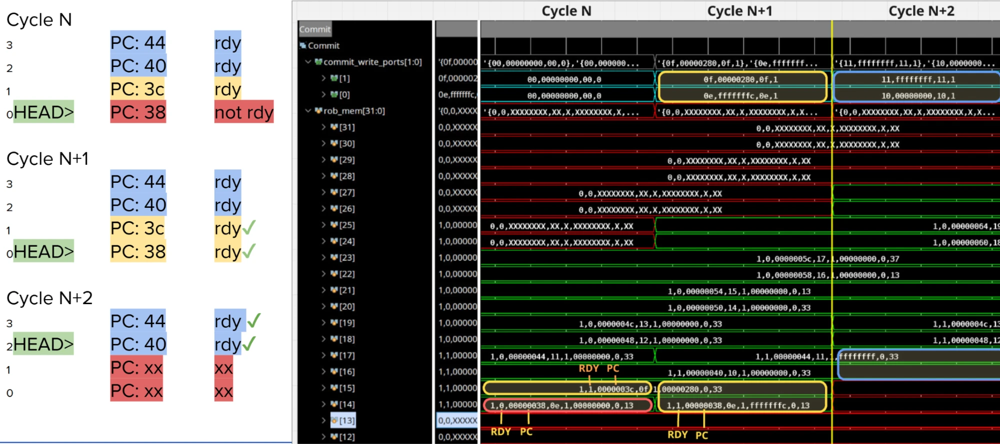

Backend¶
The backend runs instructions out of order and retires them in order. Rename maps registers onto 64 physical registers, dispatch writes each instruction into the scheduler and the ROB (and a load or store queue for memory ops), issue picks ready work oldest first, execute runs it, writeback broadcasts results on two buses, and commit retires up to two a cycle. Memory ops leave at the AGU and continue in the LSU; multiply and divide are on the M extension page.
Rename¶
Each instruction that writes a register gets a free physical register, and readers take the newest mapping from the speculative RAT. Committed and speculative values share one physical register file, so retirement only changes the map and never copies data. The RTL is rename.sv and physical_regfile.sv in rtl/cpu/3-rename/.
RATs. Reset maps x0 to x31 onto p0 to p31 and puts p32 to p63 on the free list. Both RATs are LUT RAM with one bank per lane, and each entry stores the physical ID XORed with its register number, so an unwritten entry reads as its own register and reset never has to touch the RAM. Lane 1 sees lane 0’s new mapping, which covers back-to-back dependencies inside a group.
Why LUT RAM RATs. A flop RAT needs a write mux per bit and a 32-way read mux per port. The catch is that LUT RAM can’t copy the committed RAT into the speculative one in a cycle, so each register has an updated bit instead: a speculative write sets it, a flush clears them all, and a read picks the speculative entry only when it’s set.
Free list. A circular FIFO over two LUT RAM banks, so lane 0 takes the head and lane 1 the next slot with no scan. Committed writers return their old register to the tail, and a flush moves the head back to the commit head. A group only moves when registers, ROB entries and the queue all have room, so a stall changes nothing.
Completion. Each result carries its ROB ID and physical destination, and rename checks it against an owner table before the register file write. A stale or repeated completion changes nothing. The check runs per unit, before bus arbitration, since after the bus mux it would chain the grant, the mux and the table read ahead of the write. Wakeup skips the check because wrong-path work can only wake other wrong-path work, which the flush throws out anyway.
Register file. Two 64 x 32 banks, one per write port, with a table of which bank has each register’s latest value. Six read ports: four for the ALU ports and two for port 2. There’s no internal bypass; a value read in its write cycle comes from the forwarding network.
Recovery. Rename keeps no snapshots. On a mispredict it stops taking groups until the branch retires and the back end flushes. By then every mapping left is committed or wrong-path, so the speculative RAT returns to the committed one and the free list to its commit head.
Dispatch¶
Dispatch sends each renamed instruction to the scheduler, gives memory ops a load or store queue slot, and writes the ROB entry, all in the rename cycle. The RTL is dispatch.sv and payload_array.sv in rtl/cpu/4-dispatch/.
Every instruction without an exception enters the 12-entry scheduler with an issue class (ALU, MDU, CSR or memory) that picks its port. An instruction with an exception only gets a ROB entry, so the trap stays precise. One handshake covers rename, ROB allocation and queue insertion, so a group goes in whole or waits whole. Queue readiness comes from registered free counts, which keeps same-cycle issue off this path.
A result reaches a waiting source exactly once: through the busy table if the producer already finished, through the same-cycle register write if it finishes during rename, and through scheduler wakeup otherwise. While an execute redirect is pending, rename reports not ready, so correct-path work never enters a queue that still holds wrong-path work.
Why a payload array. Fields that don’t change after dispatch (controls, immediate, destination, FTQ ID, 107 bits) live in a LUT RAM indexed by ROB ID instead of in every scheduler entry, so scheduler entries are about 20 bits plus the ROB tag. Dispatch writes two consecutive ROB IDs a cycle, so even and odd IDs sit in two half-depth banks with one writer each. Five read ports (two for retirement, three for issue) read every cycle, and the reader ignores an empty slot.
Issue¶
Queue |
Entries |
Ports |
Feeds |
|---|---|---|---|
Scheduler: ALU, branch |
12 shared |
2 (ports 0, 1) |
the two ALUs |
Scheduler: MDU, CSR, address generation |
12 shared |
1 (port 2) |
MDU, CSR unit, AGU |
Load, store |
12 + 12 |
1 shared |
the LSU (LSU) |
The RTL is issue.sv, scheduler.sv and register_read.sv in rtl/cpu/5-issue/.
Scheduler¶
An entry is 32 bits: valid, ROB ID, two source IDs with used and ready bits, an issue class and the destination for fast wakeup. Values get read after selection.
Why tags instead of data. Early ORCA used five reservation stations that held operand values and snooped the result bus. Every entry comparing and capturing every result grows badly. Holding only tags costs one register-read cycle, but it cut the wakeup logic enough to replace the five stations with one 12-entry scheduler.
Wakeup. A result that wins a bus sets the matching ready bits, and the entry can be picked in that same cycle. Each entry compares against all six unit results and the bus grant qualifies them at the end. Comparing against the two bus lanes instead put the lane mux in front of every compare, which was the longest path in the core at 175 MHz.
Selection. A pairwise age matrix (upper triangle only) records allocation order. Ports 0 and 1 take the oldest and second-oldest ready ALU entries, and port 2 the oldest ready MDU, CSR or memory entry. I tried memory-first on port 2, but younger loads then delayed an older multiply that later work needed. Against a 12-entry ordered window, this scheduler measured +12.8% Embench and +14.7% CoreMark per MHz for 368 more LUTs.
Register Read¶
Each pick spends one cycle reading the register file and its payload, then becomes the unit’s packet. Each ALU lane holds one pick and takes the next when its packet moves on, so two picks a cycle run without bubbles.
Operands come from the register RAM, plus forward ports for each ALU’s current and held results and the load result register. Producers that wake consumers off the bus (MDU, CSR, slow ALU ops) write the RAM before anyone reads it, and producers that wake early (fast ALU, held results, speculative loads) forward. That keeps the bus mux off the ALU-to-ALU loop. At most one forward port can match, so the select is an AND-OR instead of a priority chain, and assertions check both rules.
ALU ops announce their destination as they enter the ALU, so a dependent can be picked that cycle. Branches, jumps, MDU and system ops wake on completion.
Speculative Load Wakeup¶
The LSU announces a load’s destination a cycle after its request, before the hit is known. Consumers can be picked on that with a speculative flag, and a check comes a cycle later. On a hit they take the data from the LSU result register. On a miss register read drops them, everything waiting on that register loses its ready bit but keeps its age, and they reissue on the real broadcast. The gain only showed up once everything built on the unverified load carried the flag, so a miss cancels the whole chain.
Execute¶
Slot |
Unit |
Latency |
|---|---|---|
0, 1 |
ALU |
1 cycle |
2 |
LSU |
cache dependent |
3 |
AGU |
1 cycle, to the load and store queues |
4 |
MDU |
4 for multiply, iterative for divide |
5 |
CSR |
1 cycle |
Each unit has an input register, the operation and an output register that holds the result until it gets a bus. An ungranted result stays put and backpressure reaches issue, so every unit can wait and the bus arbiter can be a plain round-robin. The RTL is in rtl/cpu/6-execute/.
Why no selective kill. An execute redirect only reaches the front end, so wrong-path ops inside a unit just finish. Only wrong-path work can use their results, and the flush at branch retirement clears every unit.
ALU¶
RV32I with an operand register and a hold register. Its current and held results forward to register read whether or not they got a bus. One adder does add, sub, slt, sltu and the jump target, one right shifter does all three shifts (a left shift reverses its input and output), and the branch compare is one subtractor plus an equality test.
For a branch, src_0 computes pc + imm and src_1 holds rs1 and rs2. The taken bit goes in bit 0 of the target, which is free since targets are 2-byte aligned, so one result word carries the whole resolution. A taken target with bit 1 set raises a misaligned fault. Jumps put pc+4 on the bus as the link value.
Why share the adder and shifter. It took one ALU from 726 to 517 LUTs with the same results and cycles, and the ALU-to-ALU loop kept 1.4 ns of slack.
CSR¶
CSR ops only issue at the ROB head, so this path is never speculative. The old value goes on the bus and the new value waits in the ROB until commit. The ALU (misaligned target), AGU (misaligned address) and LSU (access fault) send faults to the ROB, and commit decides when to trap.
Writeback¶
Writeback assigns the two result buses each cycle among the two ALUs, the LSU, the MDU and the CSR unit (rtl/cpu/7-writeback/cdb.sv). Rename checks each result, the register file writes it, the scheduler wakes on it and the ROB marks the entry ready. Any priority logic in the arbiter would sit in front of all of those, so it’s round-robin.
Why loads always take lane 1. The LSU result register can then move every cycle and the load queue never waits on arbitration, which keeps arbitration off the cache request path. The other four rotate for lane 0, and for lane 1 when there’s no load, so anything waiting wins within four cycles.
The round-robin keeps a registered matrix of which source goes before which, instead of walking from the last grant, and selects results with mask and OR, since this path fans out to the whole back end. A faulting result completes its ROB entry but wakes nobody and writes no register; cause and tval take separate ports to keep the bus narrow.
Commit¶
Commit retires up to two instructions a cycle in order. The ROB also runs the core: it hands out instruction IDs, tracks completion, authorizes stores, serializes system ops, raises traps and redirects the front end. The RTL is rob.sv and csr.sv in rtl/cpu/8-commit/.
ROB array |
Holds |
Written by |
|---|---|---|
status |
valid, ready |
dispatch, completion, retirement, flush |
result |
branch taken and target |
branch resolves |
payload array |
PC, immediate, destinations, controls, FTQ and CSR IDs |
dispatch |
CSR value |
the proposed CSR write |
CSR unit |
flags |
CSR write, store authorized, atomic resolved, uncached, replay, repair |
one writer each |
The arrays are split because different producers write different fields in different cycles. The flags are LUT RAM banks with one writer each, read as the XOR of the banks, so they need no reset. A registered one-hot copy of the head picks the head’s state with a masked OR instead of a 32-way chain.
Retirement¶


Four entries at PCs 0x38 to 0x44. In cycle N the entries at 0x3c, 0x40 and 0x44 are done but the head at 0x38 isn’t, so nothing retires. In N+1 the head finishes and 0x38 and 0x3c retire together, and in N+2 0x40 and 0x44 follow. Results come back out of order and leave in order, two a cycle.
Branches. The predictor takes one outcome a cycle, so one control op retires a cycle. A head branch can pair with a younger non-control op.
Serializing ops. CSR, system, fence and faulting instructions retire alone.
Cacheable stores retire when ready and send their token as they go; the data drains from the store queue later.
Uncached stores and atomics wait for their response, so an AXI write error becomes a precise fault.
Load replay. When the load queue reports a load that ran ahead of an overlapping older store, the ROB marks it, and at the head it redirects to that load and flushes, so the load runs again.
Exceptions¶
Fault reports come in out of order, and the ROB keeps the oldest by distance from the head. Reports are registered on arrival to keep decode, the branch compare and the memory response off the tracker. Entries have no exception bit: the head pair faults when the tracked report, or one waiting to get in, names it. The trap event is registered, so the redirect stays off the commit path, and the faulting instruction never counts in minstret.
Interrupts¶
Interrupts are taken between instructions with mepc at the head’s PC. A head exception goes first, and an authorized store or a started FENCE.I finishes first. A pending interrupt blocks allocation, and with an empty ROB one group goes in to give a precise resume PC. The priority order is on the traps page.
FENCE.I¶
At the head, FENCE.I waits for the store queue to drain, the L1s write back dirty lines and invalidate, and the ROB redirects to pc + 4. It waits for the stores because cacheable stores retire before they reach the D-cache, and code written by the program has to be in the writeback. The redirect throws away everything fetched past the fence.
minstret is counted through a register, so the commit cycle never drives a 64-bit adder, and a read adds the pending count back. A fused pair counts as two. The CSRs and trap sequence are on the ISA and traps page.
Recovery¶
There are no rename checkpoints and the ROB never rewinds:
Execute finds a mispredict and redirects only the front end. Fetch restarts on the right path, the FTQ drops younger entries, and history and the RAS pointer roll back.
Rename stops, and the right path collects in the front end.
The branch retires alone. Next cycle the back end flushes, the speculative RAT becomes the committed one, and the right path goes in.
Rename allocates in order, so once the branch retires everything left in the back end is wrong-path and a full flush is exact. Traps, MRET, FENCE.I and load replays use the same flush at commit. ROB tags wrap, so every age compare subtracts the head first.
Why no checkpoints. Checkpoints need branch masks on every op and squash logic in every queue and unit. Here the front end refills while the back end drains instead. Against rename checkpoints it measured -0.29% Embench and -0.06% CoreMark per MHz and saved 1,499 LUTs.
Limits¶
Two ALUs, so two simple ops start a cycle, and the divider isn’t pipelined.
Two result buses, so bursts of completions serialize.
Serializing instructions retire one a cycle, and only one trap or
MRETis in flight.32 ROB entries and 32 free registers bound the window.